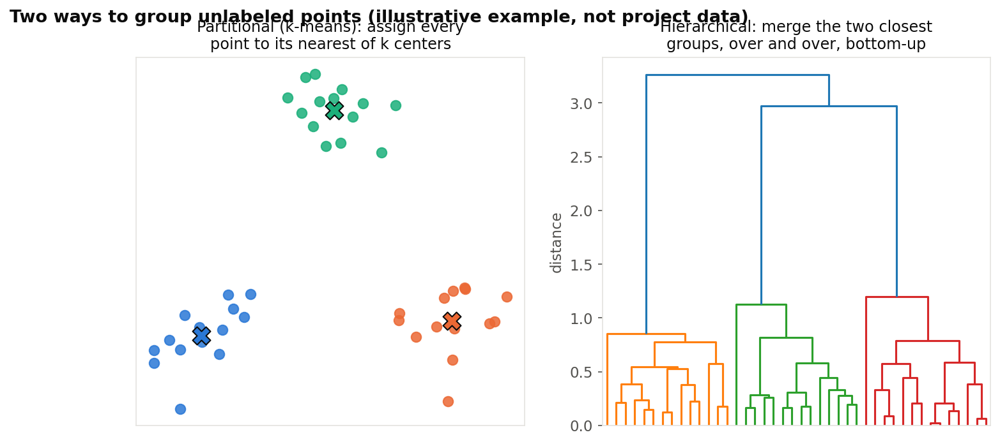
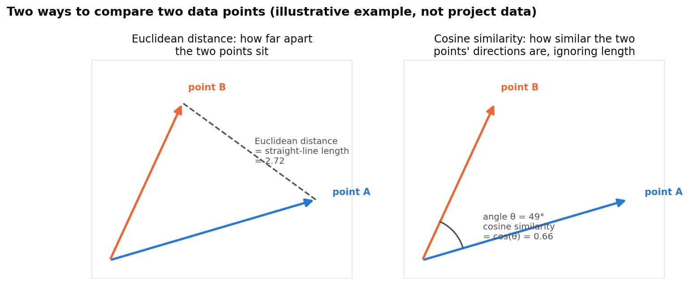
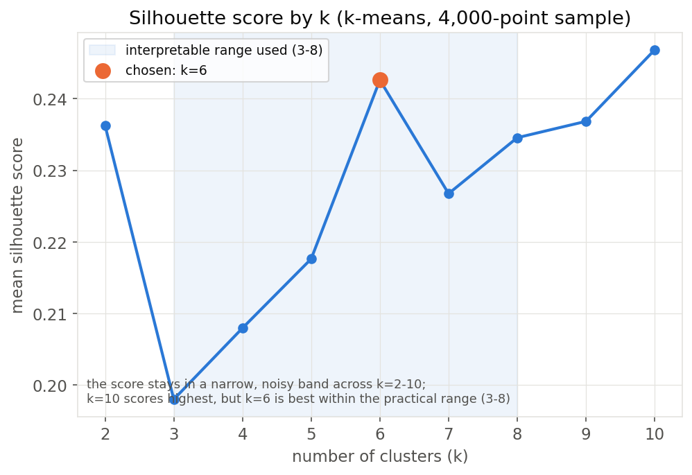
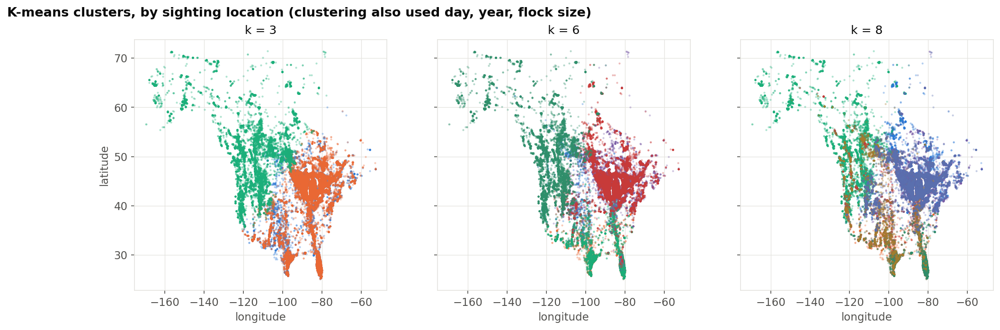
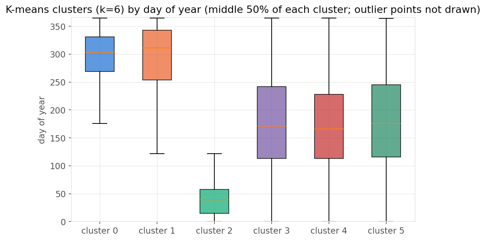
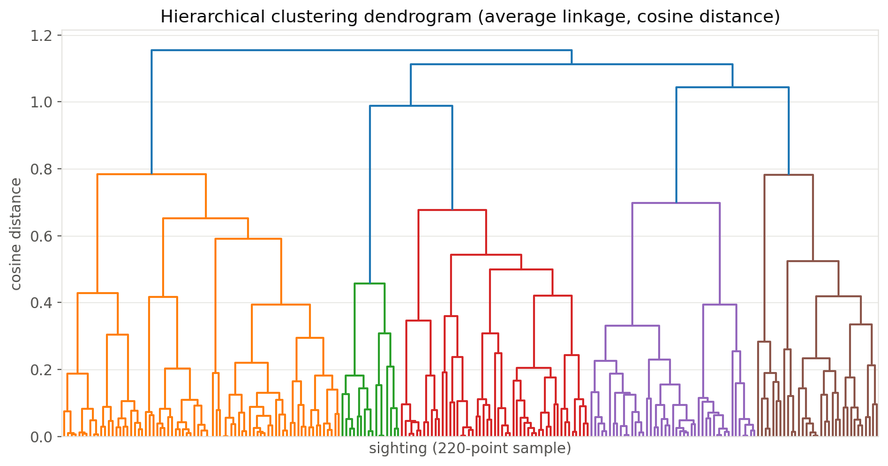
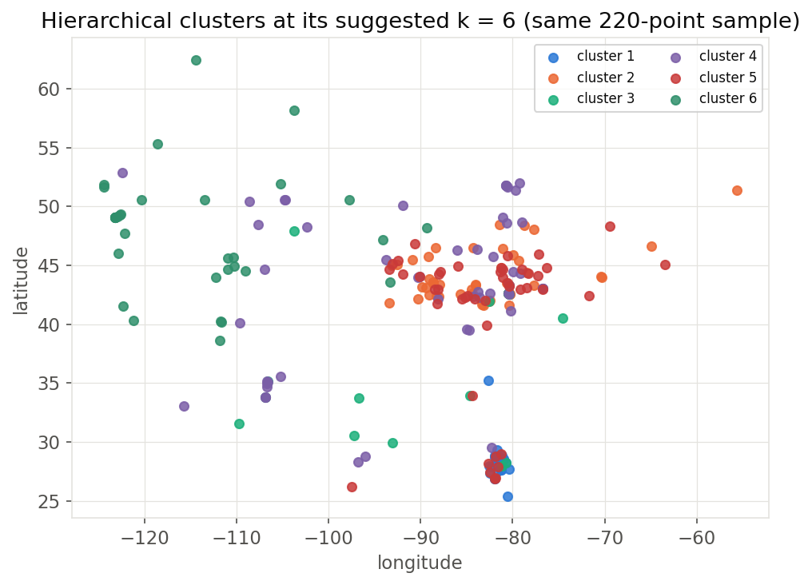

Clustering
Clustering looks for natural groups in data that has no labels telling it what the groups should be. Here it is used to see whether cleaned crane sightings, described only by where, when, and how many birds were counted, fall into groups on their own, without ever being told the season, the site, or any other category used elsewhere on this site.
OverviewPartitional vs. hierarchical. Partitional clustering, the kind k-means does, picks a number of groups k ahead of time and assigns every point to whichever of k centers is closest, moving the centers and reassigning points until neither changes. Hierarchical clustering builds a tree instead, starting with every point as its own group and repeatedly merging the two closest groups until only one remains, with a chosen height in that tree, the dendrogram, cut to get back to some number of groups. K-means needs k chosen in advance, while hierarchical clustering produces every value of k at once and lets the tree itself suggest a good one.
Distance metrics. Both methods need a way to measure how far apart two points are, and here they use different ones. K-means, through scikit-learn, measures plain straight-line Euclidean distance between points once the features below are put on the same scale. The hierarchical clustering instead uses cosine similarity, which compares the direction two points point in from the origin rather than how far apart their tips are, so two points pointing the same way score as similar even if one represents a much larger value overall. The two diagrams below illustrate both ideas with a small made-up example, not the project's data.
Plan for discovery. Every cleaned sighting already carries a location, a date, and a flock size, but nothing on this site has grouped sightings using only those three kinds of information. Clustering them is a way to ask the data directly whether sightings fall into a handful of natural groups, such as distinct migration pulses or regions, and whether two different clustering methods agree on how many groups there are and which sightings belong together.


code/03_eda_figures.py has been run on the gathered data.

code/03_eda_figures.py has been run on the gathered data.Clustering and PCA both require unlabeled numeric data: every column has to be a number, and none of them may be a category that answers the question being asked, such as season or site. cluster_features.csv was built from observations_clean.csv for this purpose. It has one row per cleaned sighting and five columns, all numeric and all scaled to a comparable 0-to-1 range: lat_norm and lon_norm (where), day_norm and year_norm (when), and count_norm (how many birds). No season, phase, site name, or count-class label is included anywhere in the table, so neither method can take a shortcut by reading off an answer that a person already assigned. Before clustering, this table is standardized again (each column rescaled to mean 0, standard deviation 1), which keeps k-means' Euclidean distance from being dominated by whichever column happens to have the widest spread.

code/03_eda_figures.py has been run on the gathered data.Written in Python with pandas, NumPy, scikit-learn (KMeans, silhouette_score, StandardScaler), SciPy (linkage, dendrogram, fcluster for the cosine-distance hierarchical clustering), and matplotlib. Full code: code/04_clustering_pca.py (the two overview diagrams above come from code/05_concept_diagrams.py).
Choosing k for k-means. The silhouette score, a measure from -1 to 1 of how well-separated the clusters are, was computed for every k from 2 to 10 on a 4,000-point sample. The silhouette scores remain within a relatively narrow range across the tested values of k = 2 through 10, between about 0.20 and 0.25. Although k = 10 has the highest overall score, that is the edge of the tested range, where a score that only keeps climbing is not trustworthy as "the best k," so the comparison instead uses the best score within a practical range of 3 to 8 clusters, chosen because the site tracks 7 reference locations: within that range, k = 6 has the highest score.


code/03_eda_figures.py has been run on the gathered data.K-means was then run with three k values, 3, 6, and 8, to compare how the map of clusters changes as more groups are allowed. At k=3 the clusters read almost entirely as geography, a western group, an eastern group, and a thin transitional group between them. At k=6 and k=8, additional clusters peel off that separate more by timing and flock size than by location alone, which matches the loadings PCA finds below.


code/03_eda_figures.py has been run on the gathered data.At the chosen k=6, two clusters, about 20 percent of all sightings or 33,696 of 167,678, hold nearly all of the September-through-December reports regardless of location, and a third cluster, about 12 percent or 20,277 reports, similarly holds most of the January-through-April reports. The remaining three clusters, holding about two-thirds of the data (67.8 percent, 113,705 reports), span almost the whole year and instead separate mainly by location. In other words, k-means finds a plausible mix: some of its six groups really describe migration timing, and the rest really describe geography.


code/03_eda_figures.py has been run on the gathered data.Hierarchical clustering. Average-linkage hierarchical clustering with cosine distance was run on a smaller, 220-point sample, since the method compares every pair of points and a smaller sample keeps it fast. Its silhouette score was checked the same way, for every k from 2 to 8, and unlike k-means it peaks clearly, at k = 6 again, with a silhouette score of 0.367, noticeably higher than any k-means result.


code/03_eda_figures.py has been run on the gathered data.

code/03_eda_figures.py has been run on the gathered data.Comparing the two methods. K-means was refit on that same 220-point sample at k=6 so the two methods could be compared directly on identical points. Their cluster labels agree with an Adjusted Rand Index of 0.63, where 1.0 would mean identical groupings and 0 would mean no more agreement than chance, so two different clustering methods, using two different distance measures, substantially agree on how six groups should look, though not perfectly.
ConclusionsTwo results stand out. First, both methods independently point to around six natural groups in the unlabeled data and agree with each other reasonably well (Adjusted Rand Index 0.63), even though the silhouette scores themselves are modest, 0.20 to 0.37 at best, which is itself a finding: sandhill crane sightings do not fall into a small number of tight, well-separated clusters, and migration is more of a continuum across space and time than a set of discrete categories, matching what the DataPrep/EDA tab already showed about the gradual, overlapping nature of spring and fall movement. Second, clustering adds a cleaner picture of which continuum dominates: about a third of the six clusters are defined mainly by when a sighting happened, clearly separating fall/winter and January-April reports, while the rest are defined mainly by where it happened. That split, discovered without being told anything about seasons or sites, is a useful starting point for the supervised models still to come. What clustering establishes is this geographic and seasonal structure in the data as it stands, not whether migration timing has shifted year over year; that question is left for the Regression tab, which will test day-of-year against year directly.